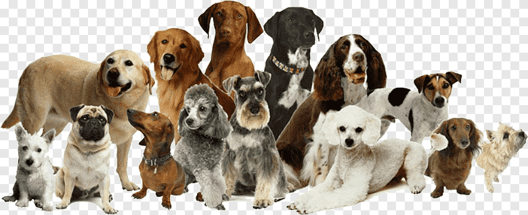

<map name="image_map">
  <area alt="Labradorke" title="Labradorke" href="https://en.wikipedia.org/wiki/Golden_Retriever" coords="33,193 46,209 37,135 46,113 80,97 117,95 167,107 199,87 233,90 252,115 251,190 215,188 228,222 224,238 219,269 216,299 229,317 230,325 216,325 208,322 199,293 201,276 200,253 192,242 185,220 194,199 192,187 176,182 145,180 91,237 71,215 52,225 " shape="polygon">
  <area alt="Pudelka" title="Pudelka" href="https://en.wikipedia.org/wiki/Poodle" coords="528,359 610,349 685,297 704,328 726,324 727,300 721,250 676,237 646,242 652,205 601,176 566,193 549,213 555,245 579,250 572,267 552,313 503,340 490,356 509,362 521,366 539,363 " shape="polygon">
  <area alt="Taxioras" title="Taxioras" href="https://lt.wikipedia.org/wiki/Taksi" coords="244,338 224,339 237,320 239,298 249,243 240,223 218,204 220,184 273,193 296,215 287,264 305,285 330,299 322,316 307,334 286,361 258,352 " shape="polygon">
</map>